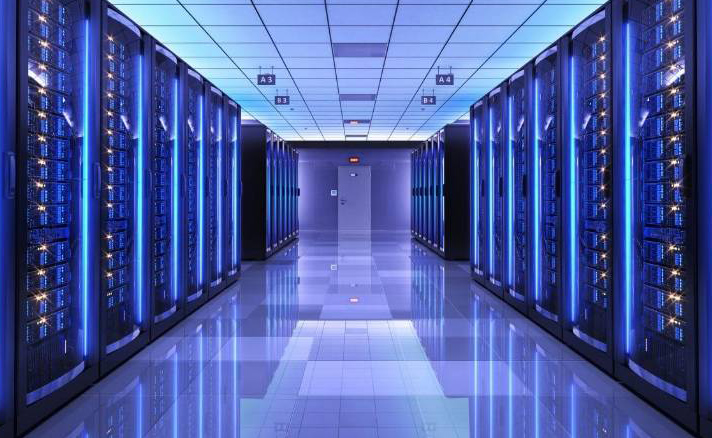

La pollution numérique
Le réchauffement climatique est un sujet très sensible en ce moment. Il est accentué par diverses activités humaines, dont une des plus importantes est l’utilisation d’Internet. Cet outil devenu indispensable engendre une énorme pollution. Malheureusement, 73% des gens n’en ont pas conscience. Une simple recherche Google, ou l’envoi d’un mail, crée des rejets de CO2 non négligeables. Mais en quoi consiste la pollution numérique ?
Qu'est-ce que la pollution numérique ?
La pollution numérique est constituée de tous les déchets qui sont produits par la fabrication, l’utilisation et l’élimination des nouvelles technologies. Cette pollution représente 1400 millions de tonnes de CO2 rejetées par an. Elle est responsable de 4% des gaz à effet de serre émis dans le monde, et ce chiffre pourrait doubler voire tripler d’ici 2025. Internet consomme 10% de l’électricité mondiale.
La fabrication des appareils électroniques nécessite l’extraction de matières premières et de métaux, disponibles en quantité limitée. L’extraction et le transport de ces matériaux ont des conséquences néfastes pour l’environnement. La fabrication d’un smartphone représente 90% de l’énergie totale qu’il utilisera.

Illustration du transfert de données @innovaprintservices.fr
L’utilisation d’Internet représente pas moins de la moitié de la pollution numérique. Cela est dû au stockage et au transfert de données comme des vidéos, des photos, des mails ou des pages web. Leur conception et leur alimentation consomment beaucoup d’énergie. Le simple fait de regarder des vidéos en ligne représente 306 millions de tonnes de CO2 par an.
L’élimination de nos appareils électroniques est également une grande source de pollution. Seulement 5% de ces appareils sont recyclés. 75% des déchets numériques européens sont exportés illégalement en Asie et en Afrique.
Trop de données pour la planète
Les données que nous mettons en ligne sont stockées par des data centers. Ces centres récoltent nos données et les enregistrent en permanence. Pour leur bon fonctionnement, ils ont besoin d’énormément d’électricité. En France, ils consomment 10% de l’électricité du territoire. 40% de cette électricité est utilisée simplement pour refroidir les machines et les bâtiments. Les data centers collectent de plus en plus d’informations, et cela quotidiennement. Leur consommation en énergie augmente donc de jour en jour.
Le gouvernement et les services secrets tels que la NSA ou la CIA collectent une grande partie de nos données personnelles. Le prétexte de cette collecte de masse est de lutter contre le terrorisme, ou encore de contrôler les fraudes. Mais ces organismes récoltent un nombre bien trop important de données, dont la grande majorité est sans intérêt. Malgré tout, ces données sont stockées, elles polluent inutilement, sans compter que cela ne respecte pas notre vie privée.
Page précédente Page suivanteExtrait de "La face cachée d'Internet", par Rayna Stamboliyska
Les fondements de cet État dans l’État remontent surtout à la période immédiatement postérieure aux attentats de 11 septembre 2001. Six semaines après les attaques et suite à une lecture précipitée par le Congrès américain, le président de l’époque, George W. Bush, promulgue le Patriot Act. Ce dernier élargit considérablement les pouvoirs de surveillance du gouvernement. Le dispositif le plus controversé du Patriot Act permet ainsi aux agences de renseignements, du FBI à la CIA en passant par la NSA, de récupérer auprès des opérateurs de télécommunications privés des informations personnelles d’usagers, de mettre ces derniers sur écoute, d’archiver et d’exploiter des données issues de surveillance électronique. Un simple soupçon suffit pour intervenir auprès des fournisseurs de services. Et cette collecte et son exploitation se font sans que les usagers en soient avertis. Le Patriot Act prévoit également la possibilité de perquisitionner chez un suspect ainsi que de saisir ses biens en son absence, sans avoir besoin de le prévenir. Et comme nommer les choses, c’est les faire exister, cette loi crée aussi des statuts juridiques particuliers : « ennemi combattant » ou encore « combattant illégal » ; ces nouvelles définitions permettent d’arrêter, d’inculper et de détenir sans limite de durée toute personne soupçonnée de terrorisme.
Le Patriot Act prévoit l’émission, par le FBI, d’injonctions, les NSL, pour National Security Letters (« lettres de sécurité nationale »). Celles-ci permettent au FBI d’avoir accès aux données d’usagers de télécommunications. Concrètement, un ou deux agents du FBI se présentent à votre bureau pour vous transmettre la fameuse NSL en main propre. Et en fait, ce n’est pas une demande : vous devez obtempérer sans délai. […]
Selon l’ACLU (American Civil Liberties Union, l’« Union américaine pour les libertés civiles »), entre 2003 et 2006, plus de 200 000 NSL ont été distribuées aux fournisseurs d’accès et services de télécommunications. Les données ainsi récupérées ont été archivées et traitées. Des documents obtenus en 2015 ont démontré que l’utilité de Stellar Wind a été quasi-nulle : un rapport (747 pages) rédigé en 2009 précise que les indices obtenus via ce programme de surveillance sur la période 2001-2004 ont été des « contributions significatives » dans la lutte antiterroriste dans seulement 1,2 % des cas. Eh bien, 1 %, c'est peu… Le rapport continue en précisant que pour la période 2004-2006, aucun des indices fournis n’a été utile. Enfin, le Patriot Act, initialement prévu pour lutter contre le terrorisme, a été utilisé à d’autres fins : d’après l’Electronic Frontier Fondation (EFF), sur 11 129 demandes de perquisition dans le cadre du Patriot Act en 2013, seuls 51 avaient trait au terrorisme ; les demandes concernaient pour l’essentiel le trafic de drogue (9 401). Des millions dépensés par le trésor public pour espionner les citoyens américains et étrangers, pour un résultat bien médiocre en somme.